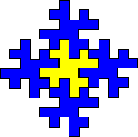

| Because opposite sides are modified in complementary ways, this shape will tile the plane. |
| This tile is a filled-in polygon; it is not at all a fractal. |
| However, notice that four copies of this shape will fit into the top, right side, bottom, and left side of the shape. |
|  |
| To keep the aggregate of manageable size, first reduce the copies before placing them. |
Return to Method 1.